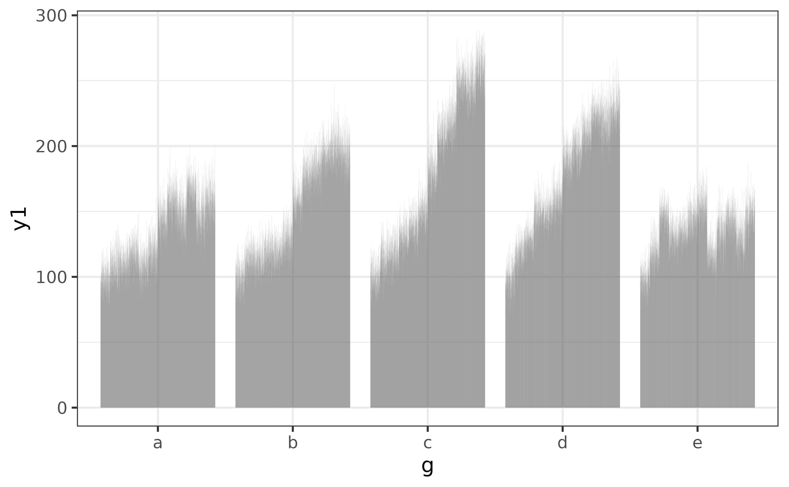
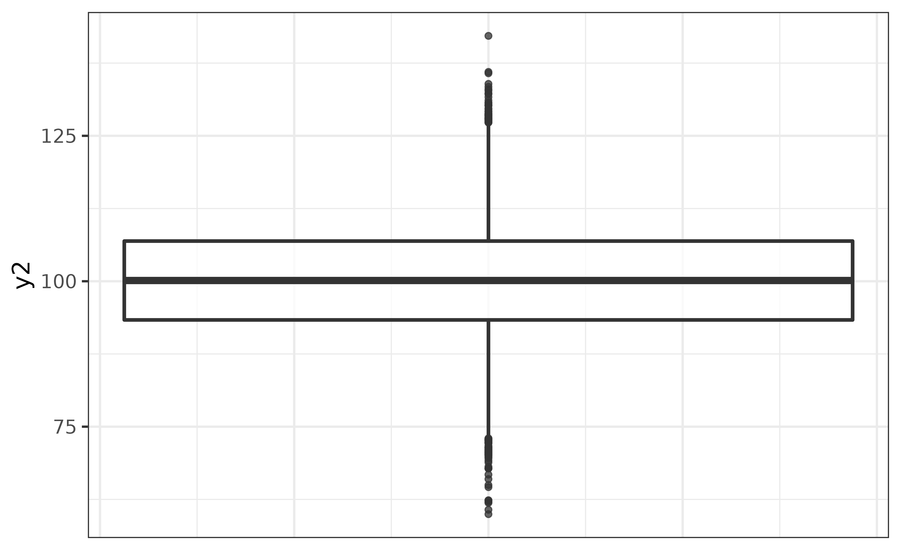
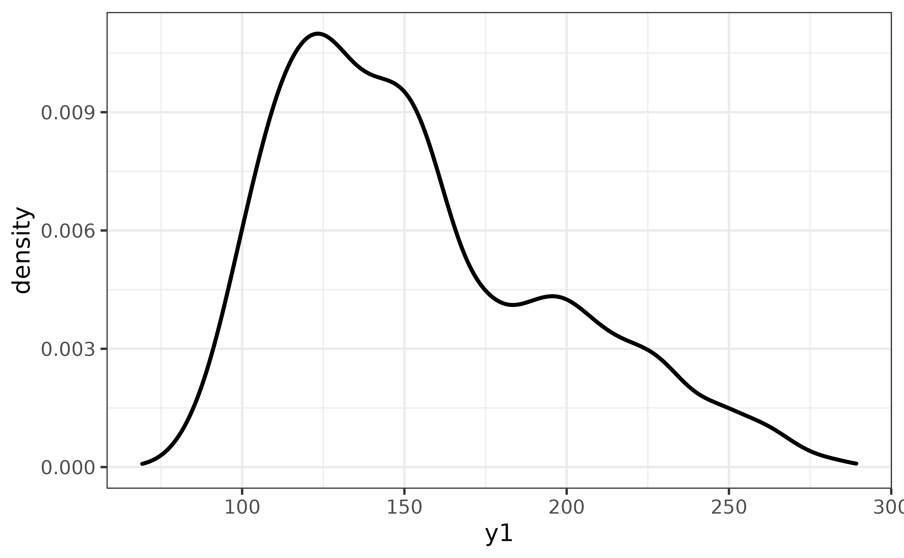
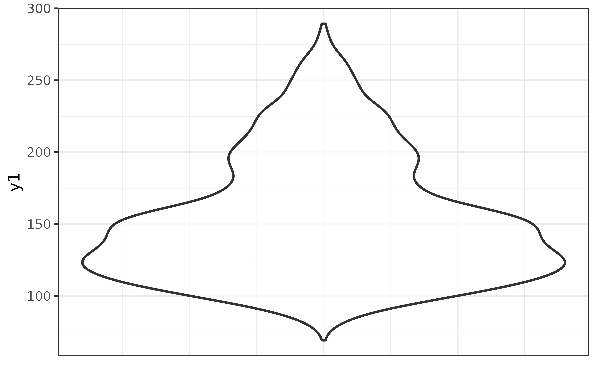
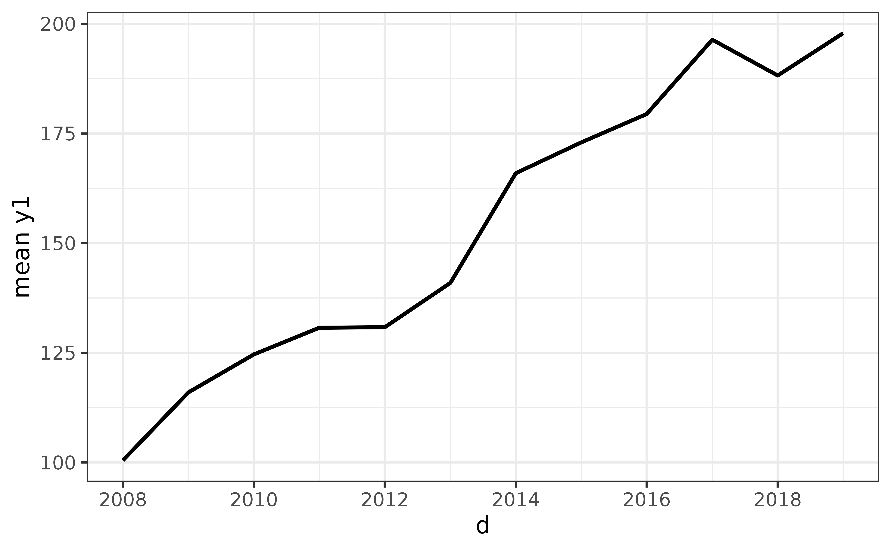
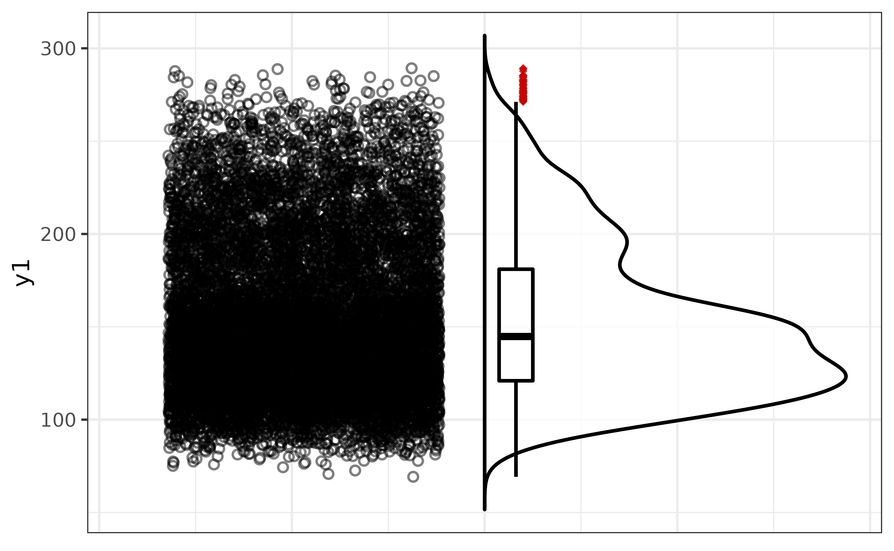
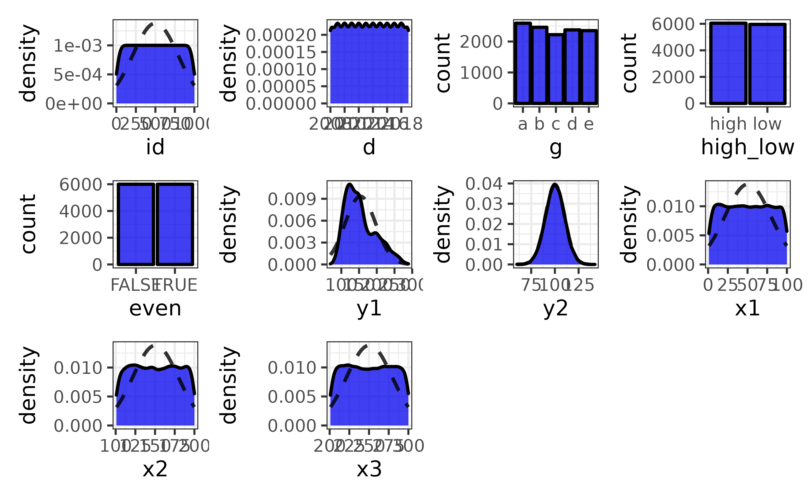

Overview
Exploratory data analysis (EDA) is a key step in nearly all analysis workflows. However, this critical step in conducting meaningful analyses is inadequately covered in most STEM training programs, which typically make use of previously cleaned and explored data sets for course exercises. Consequently, aspiring researchers are often left to figure EDA out on their own when they encounter real (i.e. messy) data in their work, where finding suitable tools and accessible documentation can be daunting.
elucidate helps you explore data in R by making it easy and efficient to perform the three core exploratory data analysis operations:
Interrogating data in search of anomalies with
dupes()and thecounts*function set.Describing data with the
describe*set of functions for obtaining summary statistics and detecting missing values.Visualizing data with the
plot_*set of functions.
To access these functions, you first need to load elucidate with the library() function, just like you would for any other R package.
## Loading required package: ggplot2##
## Attaching package: 'elucidate'## The following object is masked from 'package:base':
##
## mode
magrittr pipe compatibility
Many elucidate functions accept a data frame as the 1st argument and return a data frame (or a list of data frames) as output, so they are compatible with the base R (|>; introduced in version 4.1) or magrittr (%>%) pipe operators.
Data: pdata
In this vignette, I will demonstrate how to use elucidate with a contrived practice dataset that comes with the package, called pdata. Using str() shows us that pdata is a tibble containing 12,000 rows and 10 columns of various classes. In case you are wondering, tibbles are enhanced data frames. If you haven’t worked with them before, you can learn about them here.
str(pdata)## tibble [12,000 × 10] (S3: tbl_df/tbl/data.frame)
## $ id : int [1:12000] 1 2 3 4 5 6 7 8 9 10 ...
## $ d : Date[1:12000], format: "2008-01-01" "2008-01-01" ...
## $ g : Factor w/ 5 levels "a","b","c","d",..: 5 3 4 3 1 1 4 2 5 3 ...
## $ high_low: chr [1:12000] "high" "high" "low" "high" ...
## $ even : logi [1:12000] FALSE TRUE FALSE TRUE FALSE TRUE ...
## $ y1 : num [1:12000] 106.3 96.5 99.3 108.9 99.7 ...
## $ y2 : num [1:12000] 117.9 107.2 96.2 101.8 113.4 ...
## $ x1 : int [1:12000] 59 5 71 60 96 19 77 74 92 4 ...
## $ x2 : int [1:12000] 116 101 111 130 196 163 133 191 106 134 ...
## $ x3 : int [1:12000] 248 238 250 287 284 206 201 249 277 209 ...Interrogating functions
The first core EDA task is to check for common problems that can seriously perturb1 your analysis, a process I refer to as data “interrogation”. When interrogating data, we want to make sure there aren’t any duplicated rows, data entry errors, or other anomalies that need to be addressed before we can try to derive any “results” from the data. We also want to check to make sure that the data are consistent, e.g. dates are in a common format, each “category” of a factor has a single unique value, etc. If the data were entered manually and/or by multiple individuals there is a good chance they contain at least one erroneous value. Another common issue occurs when data are passed through Microsoft Excel before being imported into R, because Excel has a nasty habit of parsing some numeric and string sequences as dates when it shouldn’t. If you’re importing, data into R directly from an Excel file, you may also end up with a column of dates being parsed as 5-digit numbers, which is how Excel represents dates internally. If you work with health data, you might also be familiar with missing values being coded as specific numbers like “999” instead of the usual NA.
Fortunately, in my work as a researcher and data scientist I’ve found that most of these issues can be detected with only two simple operations:
Checking for duplicated rows.
Checking the most/least common unique values of each column in the data.
dupes()
dupes() can tell you how many rows are duplicated based on one or more variables (default is all of them). We care about this because duplicated records mislead you into thinking you have a larger sample size than you really do. Variables to use when searching for duplicates are simply specified using their names via the special ellipsis (...) argument after the “data” argument. I initially used the janitor::get_dupes() function for this purpose, but developed elucidate::dupes() because I found janitor::get_dupes() to be prohibitively slow when working with large administrative datasets (> 1 million rows). You can see some timed comparisons between them here.
library(elucidate)
#list any number of variables to use when searching for duplicates after the
#data argument
dupes(pdata, d) ## Duplicated rows detected! 12000 of 12000 rows in the input data have multiple copies.## # A tibble: 12,000 × 11
## id d g high_low even y1 y2 x1 x2 x3 n_copies
## <int> <date> <fct> <chr> <lgl> <dbl> <dbl> <int> <int> <int> <int>
## 1 1 2019-01-01 e high FALSE 144. 112. 86 199 261 1000
## 2 2 2019-01-01 c low TRUE 262. 91.8 88 104 224 1000
## 3 3 2019-01-01 d high FALSE 224. 120. 29 192 224 1000
## 4 4 2019-01-01 c high TRUE 262. 102. 77 151 254 1000
## 5 5 2019-01-01 a low FALSE 167. 91.6 75 186 258 1000
## 6 6 2019-01-01 a low TRUE 163. 83.6 39 152 293 1000
## 7 7 2019-01-01 d low FALSE 247. 98.9 88 177 202 1000
## 8 8 2019-01-01 b high TRUE 189. 102. 79 163 217 1000
## 9 9 2019-01-01 e high FALSE 156. 110. 4 136 220 1000
## 10 10 2019-01-01 c low TRUE 248. 95.9 63 113 213 1000
## # … with 11,990 more rows
#in this case we search for duplicated based on the "d" (date) column As you can see, dupes() will print a message to the console letting you know if duplicated rows were detected and how many of the rows in the original data are present as multiple copies. It then returns a tibble or data.table (if output = “dt”) containing the subset of rows which are duplicates, with an additional “n_copies” column (n_copies = number of copies), sorted by descending number of copies. In this case, searching for duplicated rows based on the date column “d” tells us that there are multiple records for each date.
If we expand the search to cover both the “d” and “id” columns, no duplicates are detected, indicating that we only have a single record per individual per day, which is what you would probably expect to see for data from a longitudinal study (but recall that these aren’t real data).
dupes(pdata, id, d)## No duplicates detected.## # A tibble: 0 × 11
## # … with 11 variables: id <int>, d <date>, g <fct>, high_low <chr>, even <lgl>,
## # y1 <dbl>, y2 <dbl>, x1 <int>, x2 <int>, x3 <int>, n_copies <int>In addition to checking for row duplicates upon importing the data into R, I strongly recommend checking again after joining one data frame to another, e.g. with the dplyr::*_join() functions.
elucidate also provides a copies() function that allows you to extract the first, last, or truly unique rows (i.e. those that had no duplicates in the original data) from a data frame using a “filter” argument that functions similarly to dplyr::filter() in that it specifies what is being retained.
Extract the first copy of each set of duplicated rows with filter = "first". For example, to get the earliest record for each id in pdata (which is already sorted by increasing date), we could use:
#in this example I'm "piping" pdata into the first "data" argument of the
#copies() function
copies(pdata, id, filter = "first")## # A tibble: 1,000 × 10
## id d g high_low even y1 y2 x1 x2 x3
## <int> <date> <fct> <chr> <lgl> <dbl> <dbl> <int> <int> <int>
## 1 1 2008-01-01 e high FALSE 106. 118. 59 116 248
## 2 2 2008-01-01 c high TRUE 96.5 107. 5 101 238
## 3 3 2008-01-01 d low FALSE 99.3 96.2 71 111 250
## 4 4 2008-01-01 c high TRUE 109. 102. 60 130 287
## 5 5 2008-01-01 a high FALSE 99.7 113. 96 196 284
## 6 6 2008-01-01 a high TRUE 102. 114. 19 163 206
## 7 7 2008-01-01 d low FALSE 91.0 87.9 77 133 201
## 8 8 2008-01-01 b low TRUE 109. 98.7 74 191 249
## 9 9 2008-01-01 e low FALSE 99.8 89.8 92 106 277
## 10 10 2008-01-01 c low TRUE 122. 83.6 4 134 209
## # … with 990 more rowsTo get the last record for each id instead, we just change the filter argument to “last”:
copies(pdata, id, filter = "last")## # A tibble: 1,000 × 10
## id d g high_low even y1 y2 x1 x2 x3
## <int> <date> <fct> <chr> <lgl> <dbl> <dbl> <int> <int> <int>
## 1 1 2019-01-01 e high FALSE 144. 112. 86 199 261
## 2 2 2019-01-01 c low TRUE 262. 91.8 88 104 224
## 3 3 2019-01-01 d high FALSE 224. 120. 29 192 224
## 4 4 2019-01-01 c high TRUE 262. 102. 77 151 254
## 5 5 2019-01-01 a low FALSE 167. 91.6 75 186 258
## 6 6 2019-01-01 a low TRUE 163. 83.6 39 152 293
## 7 7 2019-01-01 d low FALSE 247. 98.9 88 177 202
## 8 8 2019-01-01 b high TRUE 189. 102. 79 163 217
## 9 9 2019-01-01 e high FALSE 156. 110. 4 136 220
## 10 10 2019-01-01 c low TRUE 248. 95.9 63 113 213
## # … with 990 more rows
counts*
Anomalous values, inconsistent value codes, and data entry errors tend to show up in the few most common or few least common unique values of a vector or data frame column. Counts of unique values can be easily obtained with the counts* set of functions.
Use counts() to get all counts for unique values of a vector in descending (default) order…
counts(pdata$g)## [1] "a_2592" "b_2460" "d_2376" "e_2352" "c_2220"…or ascending/increasing order…
counts(pdata$g, order = "a")## [1] "c_2220" "e_2352" "d_2376" "b_2460" "a_2592"…where the results are provided as strings structured in the form “value_count”. For vectors with many unique values, you can ask for the top or bottom “n” values with the “n” argument, e.g. for the top 3 values, use:
counts(pdata$g, n = 3)## [1] "a_2592" "b_2460" "d_2376"A convenience shortcut function that provides a data frame of the top and bottom “n” (default = 5) values in adjacent columns, you can use the counts_tb() function.
counts_tb(pdata$g)## top_v top_n bot_v bot_n
## 1 a 2592 c 2220
## 2 b 2460 e 2352
## 3 d 2376 d 2376
## 4 e 2352 b 2460
## 5 c 2220 a 2592Here the column “top_v” lists up to the top “n” unique values in order of descending counts (shown in the “top_n” column), and column “bot_v” lists the least common “n” unique values in order of ascending/increasing counts (shown in the “bot_n” column). If there are “n” or fewer unique values in a vector, all of them will be shown in under both column sets.
counts_all() extends counts() by providing a named list of character vectors with counts of the unique values for each column in a data frame. Here I set a limit of 5 unique values per column (n = 5) for the sake of brevity. Note that if there are fewer than “n” unique values in a column, the output for that column will be reduced to the number of unique values it contains (unless you set the “na.rm” argument to FALSE).
counts_all(pdata, n = 10)## $id
## [1] "1_12" "10_12" "100_12" "1000_12" "101_12" "102_12" "103_12"
## [8] "104_12" "105_12" "106_12"
##
## $d
## [1] "2008-01-01_1000" "2009-01-01_1000" "2010-01-01_1000" "2011-01-01_1000"
## [5] "2012-01-01_1000" "2013-01-01_1000" "2014-01-01_1000" "2015-01-01_1000"
## [9] "2016-01-01_1000" "2017-01-01_1000"
##
## $g
## [1] "a_2592" "b_2460" "d_2376" "e_2352" "c_2220"
##
## $high_low
## [1] "high_6045" "low_5955"
##
## $even
## [1] "FALSE_6000" "TRUE_6000"
##
## $y1
## [1] "100.06747168584_1" "100.085004680002_1" "100.092666007766_1"
## [4] "100.128101325169_1" "100.153680735308_1" "100.160544090648_1"
## [7] "100.176427573167_1" "100.198465253333_1" "100.211809921234_1"
## [10] "100.212620303158_1"
##
## $y2
## [1] "100.005383531221_1" "100.006917661469_1" "100.011706250405_1"
## [4] "100.018038212306_1" "100.019628525528_1" "100.022772510382_1"
## [7] "100.024658939769_1" "100.024701039367_1" "100.026680163997_1"
## [10] "100.027335281299_1"
##
## $x1
## [1] "93_147" "45_141" "17_140" "97_139" "95_138" "37_137" "14_136" "67_136"
## [9] "72_136" "60_135"
##
## $x2
## [1] "165_146" "172_146" "126_142" "113_140" "127_139" "131_137" "114_136"
## [8] "195_135" "175_134" "158_133"
##
## $x3
## [1] "216_149" "275_149" "224_142" "295_142" "265_137" "225_136" "233_136"
## [8] "286_135" "209_134" "288_133"counts_tb_all() similarly extends counts_tb() by providing the top and bottom “n” (n = 5 by default) counts of unique values for each column of a data frame. This time we get a named list of tibbles; one for each column that was present in the data source. To save space I will just print a couple of these tibbles to show you what the output looks like.
count_list <- counts_tb_all(pdata)
#because the output is a named list we can subset it using a vector of character
#names
count_list[c("g", "high_low")] ## $g
## top_v top_n bot_v bot_n
## 1 a 2592 c 2220
## 2 b 2460 e 2352
## 3 d 2376 d 2376
## 4 e 2352 b 2460
## 5 c 2220 a 2592
##
## $high_low
## top_v top_n bot_v bot_n
## 1 high 6045 low 5955
## 2 low 5955 high 6045
#alternatively, you could pass the data through a dplyr::select() layer before
#passing it to counts_tb_all()
selected_counts_list <- pdata |>
dplyr::select(g, high_low) |>
counts_tb_all()
identical(count_list[c("g", "high_low")], selected_counts_list)## [1] TRUEI’ve found counts_tb_all() to be particularly useful when exploring a new data set for the first time, especially if someone else collected the data.
Describing functions
The second core EDA task is describing data, typically with summary (AKA “descriptive”) statistics. Getting most of the descriptive statistics you probably need for research purposes is incredibly easy with the describe* set of functions.
You can describe() numeric vectors…
describe(pdata$y1)## # A tibble: 1 × 14
## cases n na p_na mean sd se p0 p25 p50 p75 p100 skew
## <int> <int> <int> <dbl> <dbl> <dbl> <dbl> <dbl> <dbl> <dbl> <dbl> <dbl> <dbl>
## 1 12000 12000 0 0 154. 42.7 0.39 69.2 121. 145. 181. 289. 0.739
## # … with 1 more variable: kurt <dbl>…or data frame columns…
pdata |> describe(y1)## # A tibble: 1 × 14
## cases n na p_na mean sd se p0 p25 p50 p75 p100 skew
## <int> <int> <int> <dbl> <dbl> <dbl> <dbl> <dbl> <dbl> <dbl> <dbl> <dbl> <dbl>
## 1 12000 12000 0 0 154. 42.7 0.39 69.2 121. 145. 181. 289. 0.739
## # … with 1 more variable: kurt <dbl>…just as easily as character string variables…
pdata |> describe(high_low)## # A tibble: 1 × 8
## cases n na p_na n_unique min_chars max_chars counts_tb
## <int> <int> <int> <dbl> <int> <int> <int> <chr>
## 1 12000 12000 0 0 2 3 4 high_6045, low_5955…or dates…
pdata |> describe(d)## # A tibble: 1 × 7
## cases n na p_na n_unique start end
## <int> <int> <int> <dbl> <int> <date> <date>
## 1 12000 12000 0 0 12 2008-01-01 2019-01-01While the output varies depending on the variable/vector class, in all cases you get the number of rows (“cases”), the number of non-missing values (“n”), the number of missing values (“na”), and the proportion of missing values (“p_na”). Factors and logical vectors can also be used (see below).
For numeric variables (as supplied to the “y” argument), you may have noticed that we are additionally provided with:
“mean” = the mean of y.
“sd” = the standard deviation of y.
“se” = the standard error of the mean of y.
“p0” = the 0th percentile (AKA minimum) of y.
“p25” = the 25th percentile of y.
“p50” = the 50th percentile (AKA median) of y.
“p75” = the 75th percentile of y.
“p100” = the 100th percentile (AKA maximum) of y.
“skew” = the skewness of the distribution of y.
“kurt” = the (excess by default) kurtosis of the distribution of y.
For factors:
“n_unique” = the number of factor levels (AKA unique values).
“ordered” = logical value indicating whether or not the factor is ordered.
“counts_tb” = the counts of the top and bottom 2 unique values of the factor.
For character vectors/strings:
“n_unique” = number of unique strings.
“min_chars” = minimum number of characters in the values of y (i.e. length of the shortest string).
“max_chars” = maximum number of characters in the values of y (i.e. length of the longest string).
“counts_tb” = the counts of the top and bottom 2 unique strings in y
For dates:
“n_unique” = the number of unique dates/time points.
“start” = the earliest date.
“end” = the most recent/last date.
For logical vectors:
“n_TRUE” = the number of
TRUEvalues.“n_FALSE” = the number of
FALSEvalues.“p_TRUE” = the proportion of values that are
TRUE.
elucidate was designed to support group-oriented analysis workflows that are common in scientific research, where one group is being compared against other groups. To split a description by a grouping variable, simply specify the name of that variable after the column you want a description of.
pdata |>
describe(y1, #describe numeric column "y1"
g) #split by each level/category/group of the factor "g"## # A tibble: 5 × 15
## g cases n na p_na mean sd se p0 p25 p50 p75 p100
## <fct> <int> <int> <int> <dbl> <dbl> <dbl> <dbl> <dbl> <dbl> <dbl> <dbl> <dbl>
## 1 e 2352 2352 0 0 135. 18.6 0.383 75.1 123. 137. 148. 187.
## 2 c 2220 2220 0 0 177. 57.0 1.21 77.0 127. 165. 232. 289.
## 3 d 2376 2376 0 0 174. 43.9 0.901 69.2 138. 175. 214. 268.
## 4 a 2592 2592 0 0 134. 25.8 0.507 75.9 112. 133. 156. 202.
## 5 b 2460 2460 0 0 152. 37.8 0.763 74.4 118. 147. 188. 247.
## # … with 2 more variables: skew <dbl>, kurt <dbl>This grouping variable specification is passed to the special ellipsis argument, allowing you to split on as many grouping variables as you like, e.g. to split the description of numeric column “y1” by both factor column “g” and date column “d”, I just add “d” to the function call.
pdata |> describe(y1, g, d)## # A tibble: 60 × 16
## g d cases n na p_na mean sd se p0 p25 p50
## <fct> <date> <int> <int> <int> <dbl> <dbl> <dbl> <dbl> <dbl> <dbl> <dbl>
## 1 e 2008-01-01 196 196 0 0 100. 9.37 0.669 75.1 94.6 100.
## 2 c 2008-01-01 185 185 0 0 101. 10.5 0.769 77.0 93.0 100.
## 3 d 2008-01-01 198 198 0 0 101. 10.6 0.751 69.2 94.6 101.
## 4 a 2008-01-01 216 216 0 0 99.8 9.38 0.638 75.9 93.0 99.8
## 5 b 2008-01-01 205 205 0 0 101. 10.7 0.745 74.4 94.4 101.
## 6 e 2009-01-01 196 196 0 0 120. 10.2 0.73 97.0 114. 119.
## 7 c 2009-01-01 185 185 0 0 116. 11.5 0.849 82.8 108. 115.
## 8 d 2009-01-01 198 198 0 0 120. 9.29 0.66 92.5 112. 121.
## 9 a 2009-01-01 216 216 0 0 110. 11.7 0.794 83.4 101. 109.
## 10 b 2009-01-01 205 205 0 0 115. 9.86 0.689 91.2 108. 116.
## # … with 50 more rows, and 4 more variables: p75 <dbl>, p100 <dbl>, skew <dbl>,
## # kurt <dbl>If you want to describe more than one column at a time, you can use the describe_all() function, which will describe each column of a data frame, where the variable being described will appear under the “variable” column.
describe_all(pdata)## $date
## # A tibble: 1 × 8
## variable cases n na p_na n_unique start end
## <chr> <int> <int> <int> <dbl> <int> <date> <date>
## 1 d 12000 12000 0 0 12 2008-01-01 2019-01-01
##
## $factor
## # A tibble: 1 × 8
## variable cases n na p_na n_unique ordered counts_tb
## <chr> <int> <int> <int> <dbl> <int> <lgl> <chr>
## 1 g 12000 12000 0 0 5 FALSE a_2592, b_2460, ..., e_2352…
##
## $character
## # A tibble: 1 × 9
## variable cases n na p_na n_unique min_chars max_chars counts_tb
## <chr> <int> <int> <int> <dbl> <int> <int> <int> <chr>
## 1 high_low 12000 12000 0 0 2 3 4 high_6045, low_…
##
## $logical
## # A tibble: 1 × 8
## variable cases n na p_na n_TRUE n_FALSE p_TRUE
## <chr> <int> <int> <int> <dbl> <dbl> <dbl> <dbl>
## 1 even 12000 12000 0 0 6000 6000 0.5
##
## $numeric
## # A tibble: 6 × 15
## variable cases n na p_na mean sd se p0 p25 p50 p75
## <chr> <int> <int> <int> <dbl> <dbl> <dbl> <dbl> <dbl> <dbl> <dbl> <dbl>
## 1 id 12000 12000 0 0 500. 289. 2.64 1 251. 500. 750.
## 2 y1 12000 12000 0 0 154. 42.7 0.39 69.2 121. 145. 181.
## 3 y2 12000 12000 0 0 100. 10.1 0.092 60.0 93.4 100. 107.
## 4 x1 12000 12000 0 0 50.5 28.9 0.264 1 25 50 75
## 5 x2 12000 12000 0 0 151. 28.8 0.263 101 126 150 176
## 6 x3 12000 12000 0 0 250. 28.9 0.264 201 225 251 276
## # … with 3 more variables: p100 <dbl>, skew <dbl>, kurt <dbl>This returns a list of data frames, each containing a description for a set of variables that share a class. To describe variables of a particular class only, you can use the class argument. For example, to describe numeric columns, use:
pdata |>
describe_all(class = "n")## # A tibble: 6 × 15
## variable cases n na p_na mean sd se p0 p25 p50 p75
## <chr> <int> <int> <int> <dbl> <dbl> <dbl> <dbl> <dbl> <dbl> <dbl> <dbl>
## 1 id 12000 12000 0 0 500. 289. 2.64 1 251. 500. 750.
## 2 y1 12000 12000 0 0 154. 42.7 0.39 69.2 121. 145. 181.
## 3 y2 12000 12000 0 0 100. 10.1 0.092 60.0 93.4 100. 107.
## 4 x1 12000 12000 0 0 50.5 28.9 0.264 1 25 50 75
## 5 x2 12000 12000 0 0 151. 28.8 0.263 101 126 150 176
## 6 x3 12000 12000 0 0 250. 28.9 0.264 201 225 251 276
## # … with 3 more variables: p100 <dbl>, skew <dbl>, kurt <dbl>The class argument to describe_all() accepts any combination of “l” (logical), “d” (date), “n” (numeric), “f” (factor), or “c” (character) as a character vector to use for class-based subsetting. As you can see, if only one class if specified this way we end up with a single tibble or data frame as output. If you prefer to work with data.tables instead of tibbles, you can also change the “output” argument from the default value of “tibble” to “dt”.
The easiest way to describe a subset of columns of mixed classes at once is to simply pass the data through a dplyr::select() layer or use another subsetting method prior to passing it to describe_all(). We can also split these tabular descriptions by an arbitrary number of grouping variables just as we did for the basic describe() function.
pdata |>
#select grouping variables and variables to be described
dplyr::select(g, y1, even) |>
#pass them to describe_all()
describe_all(g, #split by factor variable "g"
output = "dt") #change output to data.table format## $logical
## g variable cases n na p_na n_TRUE n_FALSE p_TRUE
## 1: e even 2352 2352 0 0 1092 1260 0.464
## 2: c even 2220 2220 0 0 936 1284 0.422
## 3: d even 2376 2376 0 0 1308 1068 0.551
## 4: a even 2592 2592 0 0 1284 1308 0.495
## 5: b even 2460 2460 0 0 1380 1080 0.561
##
## $numeric
## g variable cases n na p_na mean sd se p0 p25 p50
## 1: e y1 2352 2352 0 0 134.880 18.596 0.383 75.099 122.707 136.689
## 2: c y1 2220 2220 0 0 177.216 56.981 1.209 77.020 126.662 165.189
## 3: d y1 2376 2376 0 0 174.035 43.904 0.901 69.224 137.735 175.087
## 4: a y1 2592 2592 0 0 133.989 25.813 0.507 75.863 112.235 132.560
## 5: b y1 2460 2460 0 0 151.623 37.829 0.763 74.354 117.829 146.587
## p75 p100 skew kurt
## 1: 148.379 186.974 -0.383 -0.183
## 2: 232.212 289.235 0.193 -1.383
## 3: 213.949 268.205 -0.158 -1.168
## 4: 156.244 202.216 0.103 -1.075
## 5: 187.891 247.292 0.109 -1.406There are also describe_ci() and describe_ci_all() functions that can be used to obtain confidence intervals for the mean or other summary statistics of numeric variables, which can also be split by an arbitrary number of grouping variables.
pdata |> describe_ci(y1)## # A tibble: 1 × 3
## mean lower upper
## <dbl> <dbl> <dbl>
## 1 154. 153. 155.Here the first column is named after the chosen summary statistic (“mean” in this case), “lower” refers to the lower bound of the confidence interval (CI), and “upper” refers to the upper bound of the CI. The default behaviour of describe_ci() is to provide 95% CIs based on 95% (percentile) bootstrapped CIs for the mean (default) for another chosen statistic. You can change this to the more common CIs calculated from a normal distribution by switching the ci_type to “norm” (also runs faster).
pdata |>
describe_ci(y1,
g, #separate 95% CIs for each group in "g"
ci_type = "norm")## # A tibble: 5 × 4
## g mean lower upper
## <fct> <dbl> <dbl> <dbl>
## 1 a 134. 133. 135.
## 2 b 152. 150. 153.
## 3 c 177. 175. 180.
## 4 d 174. 172. 176.
## 5 e 135. 134. 136.To get bias-corrected and accelerated (BCa) boostrapped confidence for the median of the “y1” variable in pdata, we can change the “stat” argument to median (unquoted; median, not “median”) and the “ci_type” argument to “bca”. This argument accepts the name of any function that calculates a single value based on a numeric vector and uses it to generate bootstrapped confidence intervals with the boot package. I’ve also incorporated the parallel processing capabilities of the boot package into describe_ci() and describe_ci_all() functions, which can sometimes speed things up if you have multiple cores.
#set random number generator seed for reproducibility
set.seed(2021)
#start with a random sample 100 rows to limit processing time for demo
pdata[sample(1:nrow(pdata), 100),] |>
describe_ci(y1, stat = median, #get a CI of the median for y1
ci_type = "bca", #we want BCa CIs
replicates = 5000, #use 5000 bootstrap samples (default = 2000)
parallel = TRUE, #use parallel processing
cores = 2 #use 2 CPU cores
)## # A tibble: 1 × 3
## median lower upper
## <dbl> <dbl> <dbl>
## 1 146. 135. 151.describe_ci_all() extends describe_ci() to provide a CI for the chosen summary statistic for each numeric variable in a data frame. For example, to get the 95% CI for the mean of each numeric variable in pdata, for each group in “g”, we can use:
pdata |>
dplyr::select(-id) |> #drop the id column
describe_ci_all(g, ci_type = "norm")## # A tibble: 25 × 5
## variable g mean lower upper
## <chr> <fct> <dbl> <dbl> <dbl>
## 1 x1 e 50.7 49.5 51.8
## 2 x1 c 49.9 48.7 51.1
## 3 x1 d 50.5 49.4 51.7
## 4 x1 a 51.3 50.2 52.4
## 5 x1 b 50.0 48.8 51.1
## 6 x2 e 151. 150. 152.
## 7 x2 c 150. 149. 151.
## 8 x2 d 151. 150. 152.
## 9 x2 a 151. 150. 153.
## 10 x2 b 150. 149. 151.
## # … with 15 more rowsVisualization functions
Descriptive summary statistics are great, but you should also look at your data if you want to really make sense of it. Data visualization is the third core EDA task you’ll need to tackle in most data analysis projects you work on. elucidate provides a set of 14 plot_* functions that make it easy to generate customized exploratory graphs using ggplot2, with an option to convert (most of) them into plotly format for interactive exploration.
Geometry-specific plot_* functions:
plot_bar(): bar graphs.plot_box(): box-and-whisker plots.plot_density(): kernel density curve plots.plot_histogram(): histograms.plot_line(): line graphs.plot_pie(): opinionated (see below) pie charts.plot_raincloud(): rain cloud plots.plot_scatter(): scatter plots.plot_stat_error(): bars or points of a summary statistic point estimate with error bars.plot_violin(): violin plots.
Generalized plot_* functions:
plot_var(): bar graphs, box/violin plots, density plots, or scatter plots depending on the input variable class.plot_var_all(): class-appropriate graphs for each variable in a data frame.plot_var_paris(): class-appropriate graphs for all pairwise comparisons of variables in a data frame.
Utility plot_* function:
-
plot_c(): combine multiple graphs into a lattice-type display.
Examples of each of these plot_* functions are presented in the remainder of this section.
plot_* basics
The elucidate::plot_* functions are built upon the ggplot2 graphics system, which allows for incredible flexibility in customizing plots, but can be intimidating for new users to work with. The plot_* functions make it easier for users to quickly explore data by providing shortcuts to graphing options that are appropriate for a particular type of graph through documented arguments. The easiest way to learn about all options available for each plot_* function is therefore to check that function’s documentation with ?function(), e.g. ?plot_bar() for plot_bar().
In general, each plot_* function accepts a data frame source as the first argument (for pipe-compatibility), then requires one or two variables be assigned to the “x and/or”y" axes (depending on the graph type). For convenience, the principal axis used by each graph type/geometry is that plot_* function’s second argument (e.g. x-axis for plot_hisogram(), y-axis for plot_box()), so you can always make a basic graph as easily as plot_*(data, variable). For example, to get a simple histogram of the “y1” numeric variable in pdata, all you need to do is:
pdata |> plot_histogram(y1)
Or for a violin plot of y1:
pdata |> plot_violin(y1)
The second general design principle of the plot_* functions is that variables are mapped to aesthetic features of the graphs using arguments that have “_var” in their name (with the exception of “x” and “y” which map variables to the x and y axes). For example, many of the plot_* functions allow you to map a variable onto the fill colour aesthetic of a graph with a “fill_var” argument (short for “fill variable”), or (outline) colour via a “colour_var” argument. For instance, if we wanted to split the histogram of “y1” above for each category of the “g” variable, all you need to do is:
pdata |>
plot_histogram(x = y1, fill_var = g)
As you can see, by assigning a categorical variable (“g”) in the data source (pdata) to the “fill_var” argument of plot_histogram(), I get overlapping histograms of the primary numeric variable (“y1”) assigned to the “x” argument, which are differentiated by their fill colour.
The transparency of the bars (or geometric elements of other graph types) can adjusted with the alpha argument, with acceptable values ranging from 0 (fully transparent) to 1 (fully opaque).
pdata |>
plot_histogram(x = y1, fill_var = g,
alpha = 0.8) #80% opaque
To instead change the fill colour of a plot without splitting it by a grouping variable, we just use the “fill” argument instead.
pdata |> plot_histogram(y1, fill = "blue2")
Similarly, to change the outline colour of the bars, we can use the “colour” argument.
pdata |> plot_histogram(y1,
fill = "blue2",
colour = "black")
Don’t worry too much if terms like aesthetic parameters and variable mappings are confusing at this point. I wrote a blog post, available here, on the basics of the ggplot2 graphing system with many examples that assumes no prior knowledge of R graphics and should help clear things up for you.
The third general feature of most of the plot_* functions (except for plot_raincloud() and plot_pie()) that you may find helpful is a logical “interactive” argument which converts the graph to an interactive plotly format. This feature is more useful for interactively exploring data than for generating static graph images to be used in reports. You can see an example of the interactive version of plot_stat_error() here.
All plot_* functions also allow you to customize the axis labels with “xlab” and “ylab” arguments and add a figure caption with the “caption” argument. You can also adjust the font family and size with the “font” and “text_size” arguments, and the theme with the “theme” argument. For example, all at once:
pdata |>
plot_histogram(y1,
fill = "blue2",
colour = "black",
xlab = "y1 value",
ylab = "Count",
caption = "Figure 1",
font = "serif", #times new roman
text_size = 16,
theme = "light") 
bar graphs
Bar graphs are one of the best ways to visualize categorical variables.
As mentioned above, all we have to do to make a basic bar graph is pass a data frame to plot_bar() and tell it which categorical variable we want bars rendered for. If only the x-variable is specified, the bars will represent the counts of each category.
pdata |> plot_bar(g)If you want the bars to represent a specific value, such as the mean of a numeric variable, first calculate the grouped means and then assign the column containing the group means to the y argument.
pdata |>
#here I use describe() as a shortcut to get the mean of "y1" for each group
#in "g"; pdata |> dplyr::group_by(g) |> summarise(mean = mean(y1)) would work just as well
describe(y1, g) |>
plot_bar(x = g, y = mean)
The main thing to note here is that you want a single unique value for each category when using plot_bar() this way, otherwise you’ll end up with a graph that is pretty tough to read, like this:
pdata |> plot_bar(g, y1)
All elucidate::plot_* functions provide a wide variety of options to help you enhance your graphs. For example, we might want to use a different colour for each bar, in which case we can assign categorical variable “g” to the “fill_var” argument instead of “x” (or in addition to “x”).
pdata |>
plot_bar(fill_var = g)
If a variable has been assigned to “fill_var” you can stack the bars and get the proportions (of the total count) represented by each category instead of the counts by setting the “position” argument to “fill”. As a bonus, the y axis label will be updated for you.
pdata |> plot_bar(fill_var = g, position = "fill")
box plots
Box-and-whisker plots (“box plots”) provide a quick non-parametric visualization of the distribution of a numeric variables using the five-number percentile summary.
plot_box(pdata, y2)
In the basic box plot of pdata variable y2 above, the lower edge of the box represents the 25th percentile, the line inside the box represents the median (50th percentile), the upper edge of the box represents the 75th percentile, and the vertical lines extending from the box represent the limits of 1.5x the interquartile range (75th percentile - 25th percentile), or the minimum and maximum values (if no points are more extreme than the 1.5x IQR threshold). Points appearing beyond the ends of these lines are potential outliers that you should consider investigating further.
You can get a box plot for each level of a factor by assigning another variable to the x-axis, and can make extreme values easier to see by changing their colour with geom_boxplot()’s “outlier.colour”/“outlier.color” argument, e.g.
pdata |>
plot_box(y2, g,
outlier.colour = "red2")
The biggest flaw with box plots is that they won’t show you if there the y-axis variable has a multi-modal distribution. To mitigate this issue, plot_box() has a convenient “dots” argument which overlays a dot plot (via geom_dotplot()) over the box plot so that the shape of the distribution is also visible.
pdata |>
plot_box(y2, g,
outlier.colour = "red2",
dots = TRUE,
#if you have a lot of data, it's usually also a good idea to adjust
#the binwidth of the dots with the "dots_binwidth" argument, where
#smaller values compress the dots and larger values expand them
dots_binwidth = 0.4) 
In this case, it doesn’t look like we have to worry about any multi-modal distributions.
density plots
(Kernel) density plots are an excellent way to visualize the shape of the distribution of a numeric variable.
pdata |> plot_density(y1)
The y1 distribution appears to be left-skewed. To see how far off it is from a normal distribution, we can easily compare them on the same plot via plot_density()’s “dnorm” argument, which adds a normal density curve as a dashed line.
pdata |>
plot_density(y1,
dnorm = TRUE)
You can also add rug lines if you want to see how much data underlies each region of the density curve with the “rug” argument. Note that rug lines can take quite a while to render if you have many values.
pdata |>
dplyr::slice_sample(n = 500) |>
#here I am just randomly sampling 500 of the 12,000 y1 values with
#dplyr::slice_sample() to reduce rendering time
plot_density(y1,
dnorm = TRUE,
rug = TRUE)
violin plots
An alternative to the box plot or density plot is the violin plot, which provides a symmetrical mirrored (kernel) density curve. Like the box plot examples above, we can split it by a grouping variable by assigning that variable to the x-axis (“x”), “fill_var”, and/or “colour_var”.
pdata |>
plot_violin(y1, g, fill_var = g)
Quantile lines can be added with the “draw_quantiles” argument. To draw lines at the median, 25th percentile, and 75th percentile to mimic a box plot, we can use:
pdata |>
plot_violin(y1, g, fill_var = g,
draw_quantiles = c(0.25, 0.5, 0.75))
histograms
If you would prefer the traditional histogram over the kernel density plot to visualize the distribution of a numeric variable, use plot_histogram() instead.
pdata |> plot_histogram(y1)An advantage of the histogram over the density plot is that we see the counts of the binned values and immediately get an impression of how much data was used to generate the plot. The main disadvantage is that the rendered shape of the distribution depends upon the chosen number of bins or binwidth (30 bins it the ggplot2 default). For example, if I change the number of bins to 10, the second mode near a y1 value of 200 disappears…
pdata |>
plot_histogram(y1, bins = 10)
plot_histogram() also has a “dnorm” argument to make it easy to add a normal density curve to the histogram, which also adds a secondary axis on the right side of the plot for the density curve. The “dnorm” argument is incompatible with the (default) “bins” argument, so we also need to set the “binwidth” rather than the number of “bins” to use “dnorm”.
pdata |>
plot_histogram(y1,
binwidth = 10,
dnorm = TRUE, dnorm_colour = "blue2")
line graphs
Line graphs are typically used to show changes in a numeric variable (on the y-axis) over time (on the x-axis).
pdata |>
#plot numeric variable "y1" by date variable "d"
plot_line(y = y1, x = d) 
Assigning a categorical variable to the “colour_var” argument gives you a different line for each category.
pdata |>
plot_line(y = y1, x = d, colour_var = g)
A key feature of plot_line() which makes it more convenient to use than ggplot2::geom_line() is that plot_line(), unlike ggplot2::geom_line(), will automatically aggregate the y variable for you if there isn’t a single unique value of y for each level of the time/x variable and/or any other grouping variables you might use. By default, the mean is used for aggregation (as per the y-axis label), but you can change it to a percentile with the “stat” and “qprob” arguments, where the default quantile is 0.5 (the median):
pdata |>
plot_line(y = y1, x = d, colour_var = g,
stat = "quantile", #supports partial matching, could use "q" instead
qprob = 0.5) #adjust "qprob" for a different quantile (0 = min., 1 = max)
To reproduce this plot using ggplot2 directly, we would need to pre-aggregate the data with dplyr::group_by() and dplyr::summarise(). To replicate the formatting we also need to apply some additional layers, like this:
pdata |>
dplyr::group_by(d, g) |>
dplyr::summarise(median_y1 = median(y1), .groups = "drop") |>
ggplot(aes(y = median_y1, x = d, colour = g)) +
geom_line(size = 1.1) +
scale_colour_viridis_d(option = "plasma", end = 0.8) +
theme_classic(14) +
labs(y = "median y1")
Otherwise you’ll end up with an incoherent mess because there isn’t a single unique value of the y-axis variable for each combination of values for the x-axis variable and colour variable, like this:
pdata |>
#without the grouping and aggregation steps
ggplot(aes(y = y1, x = d, colour = g)) +
geom_line(size = 1.1) +
scale_colour_viridis_d(option = "plasma", end = 0.8) +
theme_classic(14) +
labs(y = "y1")
As you can see, it’s easier and more intuitive to use plot_line() for these kinds of line graphs. Other convenience aggregation “stat” options currently accepted by plot_line() include “sum” and “count”.
pie charts
The vilified pie chart is an alternative way of visualizing categorical data than the bar graph, the primary criticism of which is that visually comparing slices is much harder for humans than comparing bar lengths. However, elucidate was developed for use by researchers working in business and government in addition to those working in academia, and sometimes executives or project stakeholders want to see pie charts regardless of their limitations. I have therefore attempted to provide a convenience function that allows users to produce ggplot2 pie charts that stand a chance at being reasonably interpretable.
In my professional opinion, a pie chart should only be used when:
Your boss, academic supervisor, or project stakeholder specifically asks for one.
You are only attempting to graph a nominal variable with 5 or fewer categories.
In all other cases a bar graph should be used. If you’re still determined to generate a pie chart, here are a few recommendations to help make it easier to read.
plot_pie()has a “lump_n” argument that makes it easy to lump infrequent categories into an “other” category to help reduce the number of pie slices that will be plotted. Use this argument if you have more than 5 categories, otherwise a warning message will be printed to the console advising you to use it or switch to a bar graph.plot_pie()also provides a set of “slice_text*” arguments that make it easy for you to annotate the slices of the pie chart to display the slice percentages for example. I strongly encourage you use these arguments to help the consumers/viewers of your pie chart quickly compare slices.
Unlike most of the other plot_* functions, I will only demonstrate a single example of a “responsible” use of plot_pie():
plot_pie(data = pdata,
#assign categorical variable "g" to slice fill colour
fill_var = g,
#"pct" is a shortcut for the slice percentages
slice_text = "pct", slice_text_suffix = "%", slice_text_size = 3,
alpha = 0.8) As you can see, without the additional text specifying the percentages each category represents in terms of frequency of appearance in the data, it would be very difficult to compare slices. In contrast, a fairly basic bar graph is easier to read without requiring any extra text in/over the bars.
pdata |> plot_bar(fill_var = g)scatter plots
The scatter plot is an excellent way of graphing a relationship between two continuous variables, which can be done with plot_scatter().
pdata |>
plot_scatter(y1, y2)
The “regression_line” and “regression_se” arguments make it easy to add a regression line (by default using a generalized additive model) with confidence envelope. If overplotting is an issue, as it is here, you can also adjust the transparency with the “alpha” argument (lower is more transparent) and add some jittering with the “jitter” argument.
pdata |>
plot_scatter(y1, y2,
regression_line = TRUE, regression_se = TRUE,
jitter = TRUE, alpha = 0.7)
The relationship in this case looks to be pretty linear, so we can change the regression_method to “lm” for a basic linear model. We can also see how the relationship varies between categories of the grouping variable “g” by assigning it to the “colour_var” argument.
pdata |>
plot_scatter(y1, y2,
colour_var = g,
regression_line = TRUE, regression_se = TRUE,
regression_method = "lm",
jitter = TRUE, alpha = 0.7)
Now we can see that there is some separation between groups along the y-axis (y1) but not much change for any group along the x-axis (y2). We can make the grouped subsets of the data more clearly visible by separating them into facets with “facet_var” and making the points smaller with the “size” argument.
pdata |>
plot_scatter(y1, y2, facet_var = g,
jitter = TRUE, alpha = 0.7, size = 1)
From this perspective it looks like y1 has a bi-modal distribution for groups “b”, “c”, and “d” (and perhaps “a”). We could follow this up with a density plot to investigate further via plot_density().
pdata |>
plot_density(y1, facet_var = g)
From this perspective it looks like group “e” is the only one with a unimodal distribution of y1.
statistic +/- error bar plots
One of the most common types of graphs in the sciences, requested by both lab Principal Investigators and journal reviewers/editors, is the bar or point graph of a summary statistic (typically the sample mean) and error bars representing either the standard error or a 95 % confidence interval (CI). These so-called “dynamite plots” can easily be made with plot_stat_error(), which will give you the mean and 95% confidence interval error bars by default.
pdata |>
plot_stat_error(y = y1, x = g,
#set geom = "bar" for the bar-graph version.
fill = "blue2")
If the y-axis variable is not normally distributed, you can get bootstrapped confidence intervals for the median by simply changing the “stat” argument to “median”. By default, percentile CIs are used, but you can change this to bias-corrected and accelerated (BCa) CIs by setting “ci_type” = “bca”. BCa CIs tend to require more replications to be estimated, so you will likely also want to increase the “replicates” argument to 5,000 or more (default is 2000). To speed things up a bit you can also use parallel processing with the “parallel” and “cores” arguments.
pdata |>
plot_stat_error(y = y1, x = g,
fill = "blue2",
stat = "median",
ci_type = "bca", replicates = 5000,
parallel = TRUE, cores = 4)
The principal limitation of these graphs is that they don’t reveal anything about the underlying distribution of the data and have been criticised for concealing other pertinent information such as sample sizes. You should therefore use them with caution and perhaps present them alongside other graphics which show additional features of the data.
raincloud plots
Raincloud plots overcome the limitations of the dynamite plots covered above by presenting a combination of the raw data, box plots and half-violin plots together in a single graph.
pdata |>
plot_raincloud(y1, box_plot = TRUE)
If you want it to look more like a rain cloud, you can flip the axes with the “coord_flip” argument. We can take things a step further by also adjusting the fill colours of the points and the half-violin plot.
pdata |>
plot_raincloud(y1,
box_plot = TRUE,
coord_flip = TRUE,
box_fill = "white", box_alpha = 1,
violin_fill = "slategray3",
point_fill = "blue3", point_alpha = 0.2, point_size = 1)
For a grouped version, just assign a variable to “x”. You can also adjust the width of the box plots with the “box_width” argument, and you can move the box to the points side with the “box_side” argument.
pdata |>
plot_raincloud(y1, x = g,
coord_flip = TRUE,
box_plot = TRUE,
box_fill = "white", box_alpha = 0.4,
box_width = 0.35, box_side = "l",
violin_fill = "slategray3",
point_fill = "blue3", point_alpha = 0.2, point_size = 1)
This gives us a more transparent display of the between-group differences in y1 than the previous plot_stat_error() graphs, simultaneously showing the distribution of the data, sample sizes, and non-parametric summary statistics.
generalized univariate plots
To facilitate rapid visual exploration of data, elucidate also provides a more flexible set of plot_var*() functions which generate appropriate plots for the data type without requiring the user to specify a plot geometry. The simplest of these functions is plot_var(), which allows you to plot up to two variables and optionally split the plot by a categorical grouping variable.
For a single numeric (classes “double” or “integer”) or date variable, plot_var() generates a density plot. By default it will be enhanced by the addition of a normal density curve:
pdata |>
#here "var1" refers to the primary variable, which will be assigned to either
#the x- or y-axis for you automatically depending on the type of variable and
#which graph geometry is used
plot_var(var1 = y1) 
To split it by a categorical variable assign that variable to the “group_var” argument:
pdata |> plot_var(var1 = y1, group_var = g)
Enhancements like the normal density curve can be disabled by setting the “basic” argument of any plot_var*() function to TRUE. Beginners may also find it helpful to enable “verbose” mode, which prints a message to the console explicitly stating which geom-specific plot*() function will be used to build the plot according to the detected varible class and which axes the primary (and secondary if specified) variable(s) will assigned to.
pdata |> plot_var(y1, basic = TRUE, verbose = TRUE)## `var1` class = "numeric".
## Building graph with `plot_density()`.
## Assigning `var1` to `x`.
## Use `plot_density()` instead to access additional customization options.
## See help("plot_density") for details.
One categorical (or logical) variable will be represented as a bar graph:
pdata |> plot_var(g)
A jittered scatter plot with an added smooth (generalized additive model) regression line and confidence envelope is used for a combination of two numeric and/or date variables:
pdata |> plot_var(var1 = y1, var2 = d)
Two categorical variable will be graphed using a faceted bar plot:
pdata |> plot_var(g, high_low)
A combination of a numeric variable and a categorical variable will be graphed using a box plot enhanced with a violin plot layer, where the numeric variable will be assigned to the y-axis and the categorical variable will be assigned to the x-axis.
pdata |> plot_var(y1, g)
Note that the extra violin plot layer can be disabled by setting basic = TRUE, and splitting the graph by an additional grouping variable is again as easy as assigning that variable to the “group_var” argument.
plot_var(pdata, #data is the 1st argument
y1, #"var1" for the primary variable is the 2nd argument
g, #"var2" for a secondary variable is the 3rd argument
high_low, #"group_var" for a grouping variable is the 4th argument
basic = TRUE, #basic box plot without extra violin plot layer
verbose = TRUE)## `var1` class = "numeric" and `var2` class = "factor".
## Building graph with `plot_box()`.
## Assigning `var1` to `y`, `var2` to `x`, and `group_var` to `fill_var`.
## Use `plot_box()` instead to access additional customization options.
## See help("plot_box") for details.
generalized multivariate plots
When exploring data we often want to plot more than a couple of variables at a time. plot_var_all() extends plot_var() by generating a plot of each variable in a data frame and combining them into a patchwork grid.
pdata |> plot_var_all()
To plot a subset of variables you can pass a character vector of column names to the “cols” argument
pdata |>
plot_var_all(cols = c("y1", "y2", "x1", "x2"))
You can also plot each variable against a secondary variable of interest using the “var2” argument…
pdata |>
plot_var_all(cols = c("y1", "y2"),
var2 = high_low)
…and split all of the plots by a grouping variable with “group_var”:
pdata |>
plot_var_all(cols = c("y1", "y2"),
var2 = high_low, group_var = g,
basic = TRUE) #disable the violin plot layer
generalized pair plots
plot_var_pairs() extends plot_var_all() even further by generating a plot for each pairwise combination of variables in a data frame (“pair plots”). Here I’ll focus on a few columns at a time with the “cols” argument so the graphs are easier to read.
pdata |>
plot_var_pairs(cols = c("y1", "y2", "g"))This produces a patchwork-combined matrix of class-appropriate ggplots:
On the diagonal, you get a density plot for a comparison of a numeric variable to itself or bar graph for a comparison of a categorical variable to itself.
Off of the diagonal, you get scatter plots (plus optional regression lines) for comparisons of two numeric variables, faceted bar graphs for comparisons of two categorical variables (not shown), and box-and-whisker plots (plus optional violin plot outlines) for a comparison of a numeric and categorical variables.
The pair plots produced by plot_var_pairs() can also be split by a grouping variable with the “group_var” argument, and it may be easier to read the basic versions of each plot when there are many splits (via basic = TRUE).
pdata |>
plot_var_pairs(cols = c("y1", "y2", "g"),
group_var = high_low, basic = TRUE)
Although I unfortunately cannot demonstrate it in this vignette, plot_var_all() and plot_var_pairs() also have a “trelliscope” mode that can be enabled by setting the “trelliscope” argument to TRUE. Enabling this option will render the plots as panels in an interactive JavaScript-based trelliscope display with the trelliscopejs package. Trellisope mode is particularly useful in situations where there would be too many graphs in a multi-panel display to view them all on a single page.
combining plots
plot_c() makes it easy to combine multiple plots into a multi-panel display with the patchwork package. For example, we might want to show a box plot and density plot side by side:
p1 <- pdata |>
plot_box(y1, fill_var = g, ylim = c(50, 300))
p2 <- pdata |>
plot_density(y1, fill_var = g, xlim = c(50, 300)) +
coord_flip()## Coordinate system already present. Adding new coordinate system, which will replace the existing one.
plot_c(p1, p2)plot_c() can also be used to combine a list of plots, such as a set of density plots rendered by looping plot_density() over all numeric columns of pdata, other than the “id” column, like this:
col_names <- pdata |>
dplyr::select(is.numeric, -id) |> #select all non-ID numeric variables
names() #get the names of the numeric columns## Warning: Predicate functions must be wrapped in `where()`.
##
## # Bad
## data %>% select(is.numeric)
##
## # Good
## data %>% select(where(is.numeric))
##
## ℹ Please update your code.
## This message is displayed once per session.
#map plot_density() over all the numeric variables
plot_var_list <- purrr::map(col_names, ~plot_density(pdata, .x))
plot_c(plot_var_list)
Auxiliary functions
To simplify your workflow even further, elucidate also provides a variety convenience functions that support the core operations outlined above, such as:
- Correcting data entry errors, anomaly indicator values, and structural inconsistencies seen in real world data more easily using
recode_errors()andwash_df().
recode_errors() replaces a vector of error values with NA or another user-specified error indicator value.
recode_errors(data = c(1, 0, 1, 0, 1, 1, 1, 99),
errors = 99) #"99" is an erroneous value## [1] 1 0 1 0 1 1 1 NA
recode_errors(data = c(1, 0, 1, 0, 1, 1, 1, 99),
errors = 99,
replacement = -1) #recode it as -1 instead of NA## [1] 1 0 1 0 1 1 1 -1wash_df() is a convenience wrapper for several functions in the janitor, tibble, and readr packages that aim to standardize the formatting of data frames. Specifically, it applies the following functions in order:
-
janitor::remove_empty()to remove completely empty rows and columns. -
janitor::clean_names()to convert all column names to “snake_case” (by default). -
readr::parse_guess()to re-parse the class of each column, which is especially useful after recoding values.
For example, consider the following data frame with an erroneous letter value in an otherwise numeric column, inconsistent column name formatting, and a useless empty “notes” column.
(messy_data <- data.frame(`Column A` = c(1:5, "A"), Column_B = 10:5, NOTES = NA))## Column.A Column_B NOTES
## 1 1 10 NA
## 2 2 9 NA
## 3 3 8 NA
## 4 4 7 NA
## 5 5 6 NA
## 6 A 5 NA
(recoded_messy_data <- recode_errors(messy_data, "A", cols = 1))## Column.A Column_B NOTES
## 1 1 10 NA
## 2 2 9 NA
## 3 3 8 NA
## 4 4 7 NA
## 5 5 6 NA
## 6 <NA> 5 NAFixing the error in the first column still leaves that column as a “character” vector even though it only contains numeric values. We can correct all of the formatting issues with this data using a single call to wash_df():
recoded_messy_data |> wash_df()## # A tibble: 6 × 2
## column_a column_b
## <dbl> <dbl>
## 1 1 10
## 2 2 9
## 3 3 8
## 4 4 7
## 5 5 6
## 6 NA 5Much nicer!
- Rapidly converting one vector into another (i.e. vectorized re-coding) with
translate(). For example, you can use it to recode a column in a data frame within a call todplyr::mutate():
pdata |>
dplyr::mutate(new_g = translate(y = g,
old = c("a", "b", "c", "d", "e"),
new = c("group A", "group B", "group C", "group D", "group E"))) |>
dplyr::relocate(new_g, .after = g)## # A tibble: 12,000 × 11
## id d g new_g high_low even y1 y2 x1 x2 x3
## <int> <date> <fct> <chr> <chr> <lgl> <dbl> <dbl> <int> <int> <int>
## 1 1 2008-01-01 e group E high FALSE 106. 118. 59 116 248
## 2 2 2008-01-01 c group C high TRUE 96.5 107. 5 101 238
## 3 3 2008-01-01 d group D low FALSE 99.3 96.2 71 111 250
## 4 4 2008-01-01 c group C high TRUE 109. 102. 60 130 287
## 5 5 2008-01-01 a group A high FALSE 99.7 113. 96 196 284
## 6 6 2008-01-01 a group A high TRUE 102. 114. 19 163 206
## 7 7 2008-01-01 d group D low FALSE 91.0 87.9 77 133 201
## 8 8 2008-01-01 b group B low TRUE 109. 98.7 74 191 249
## 9 9 2008-01-01 e group E low FALSE 99.8 89.8 92 106 277
## 10 10 2008-01-01 c group C low TRUE 122. 83.6 4 134 209
## # … with 11,990 more rowsInteracting with dynamic tabular and graphical data representations via
static_to_dynamic(). See this link for an example.-
Calculating summary statistics that are not included in base R:
-
mode(): the most common value of a vector as a measure of central tendency (in addition tobase::mean()andstats::median()), and the only one which works for non-numeric vectors.
-
mode(pdata$g)## [1] "a"- `se()`: the standard error of the mean of a numeric vector.
se(pdata$y1)## [1] 0.3900124
#demonstration of equivalence to SE calculation from base/stats package R
#functions
all.equal(se(pdata$y1),
sd(pdata$y1)/sqrt(length(pdata$y1))
)## [1] TRUE- `skewness()`: a convenience wrapper implementing the same functionality provided by `e1071::skewness()` or `psych::skew()` functions, which calculate the degree of skewness in a numeric distribution (Joanes & Gill, 1998). Unlike these alternatives, the `elucidate` version uses the type 2 calculation by default since this incorporates a correction for sample size that also matches what is used in SPSS and SAS.
skewness(pdata$y1)## [1] 0.7390796
#demonstration of equivalence to psych::skew(type = 2)
if(requireNamespace("psych")){
all.equal(
skewness(pdata$y1),
psych::skew(pdata$y1, type = 2)
)
}## Loading required namespace: psych## [1] TRUE- `kurtosis()`: a convenience wrapper implementing the same functionality provided by `e1071::kurtosis()` or `psych::kurtosi()` functions, which calculate the degree of skewness in a numeric distribution (Joanes & Gill, 1998). Unlike these alternatives, the elucidate version uses the type 2 calculation by default since this incorporates a correction for sample size that also matches what is used in SPSS and SAS.
kurtosis(pdata$y1)## [1] -0.1805952
#demonstration of equivalence to psych::kurtosi(type = 2)
if(requireNamespace("psych")){
all.equal(
kurtosis(pdata$y1),
psych::kurtosi(pdata$y1, type = 2)
)
}## [1] TRUE- `inv_quantile()`: inverse quantiles, or the opposite of what you get from `stats::quantile()`, namely, the probabilities corresponding to specific values in the input vector. These can be converted to percentiles by multiplying the results by 100, which could be useful for educators (or students) who want to know what their percetile rank is on a test for example.
#Which quantile in vector "y" is a value of 80?
inv_quantile(y = seq(10, 100, 10),
values = 80) ## [1] 0.8- `consum()`: cumulative summation of consecutive 0/1 or FALSE/TRUE values.## [1] 1 0 1 2 0 1 2 3- `mean_ci()`: theoretical (i.e. assuming normality) or bootstrapped confidence intervals for a sample mean.## mean lower upper
## 10.031340 9.828066 10.234614- `median_ci()`: boostrapped confidence intervals for a sample median.
median_ci(x)## median lower upper
## 9.899695 9.733724 10.174393- `stat_ci()`: boostrapped confidence intervals for other summary statistics.
stat_ci(x,
#assign the unquoted name of a summary statistic function to the "stat"
#argument
stat = sd) ## sd lower upper
## 1.0371321 0.9136501 1.1940179-
colour_options()renders a graph of all of the base R colour options to facilitate custom colour modifications. Note that it is easier to read if expanded to full-screen viewing or printed to a pdf file (via the “print_to_pdf” argument).


- The
%ni%operator, which does the opposite of the%in%operator, checking for values in one vector that are not in another vector.
#%in% checks for matching values
c("a", "b", "a", "c", "d") %in% "a"## [1] TRUE FALSE TRUE FALSE FALSE
c("a", "b", "a", "c", "d") %in% "z"## [1] FALSE FALSE FALSE FALSE FALSE
#%ni% checks for non-matching values
c("a", "b", "a", "c", "d") %ni% "a" ## [1] FALSE TRUE FALSE TRUE TRUE
c("a", "b", "a", "c", "d") %ni% "z"## [1] TRUE TRUE TRUE TRUE TRUE
#using %in% for subsetting with dplyr::filter()
pdata |>
#extract only records for groups "a" or "b"
dplyr::filter(g %in% c("a", "b")) ## # A tibble: 5,052 × 10
## id d g high_low even y1 y2 x1 x2 x3
## <int> <date> <fct> <chr> <lgl> <dbl> <dbl> <int> <int> <int>
## 1 5 2008-01-01 a high FALSE 99.7 113. 96 196 284
## 2 6 2008-01-01 a high TRUE 102. 114. 19 163 206
## 3 8 2008-01-01 b low TRUE 109. 98.7 74 191 249
## 4 11 2008-01-01 a high FALSE 93.8 102. 56 142 285
## 5 12 2008-01-01 a low TRUE 96.5 92.4 100 111 277
## 6 13 2008-01-01 a low FALSE 86.6 86.0 69 119 228
## 7 14 2008-01-01 a high TRUE 86.5 105. 44 182 290
## 8 15 2008-01-01 a high FALSE 99.6 101. 91 124 294
## 9 16 2008-01-01 b low TRUE 112. 99.8 35 179 295
## 10 18 2008-01-01 b low TRUE 103. 86.2 27 187 210
## # … with 5,042 more rows
#using %ni% for subsetting with dplyr::filter()
pdata |>
#extract records for groups other than "a" or "b"
dplyr::filter(g %ni% c("a", "b")) ## # A tibble: 6,948 × 10
## id d g high_low even y1 y2 x1 x2 x3
## <int> <date> <fct> <chr> <lgl> <dbl> <dbl> <int> <int> <int>
## 1 1 2008-01-01 e high FALSE 106. 118. 59 116 248
## 2 2 2008-01-01 c high TRUE 96.5 107. 5 101 238
## 3 3 2008-01-01 d low FALSE 99.3 96.2 71 111 250
## 4 4 2008-01-01 c high TRUE 109. 102. 60 130 287
## 5 7 2008-01-01 d low FALSE 91.0 87.9 77 133 201
## 6 9 2008-01-01 e low FALSE 99.8 89.8 92 106 277
## 7 10 2008-01-01 c low TRUE 122. 83.6 4 134 209
## 8 17 2008-01-01 c low FALSE 91.1 88.1 27 111 218
## 9 20 2008-01-01 c low TRUE 109. 82.7 71 146 267
## 10 23 2008-01-01 e low FALSE 96.5 95.5 89 151 289
## # … with 6,938 more rowsThere you have it. Now you’ve seen most of what elucidate has to offer. Hopefully you’ll find that the package helpful when exploring data!
Learn more
- To learn more about
elucidate, visit the package’s GitHub repository and checkout this blog post.